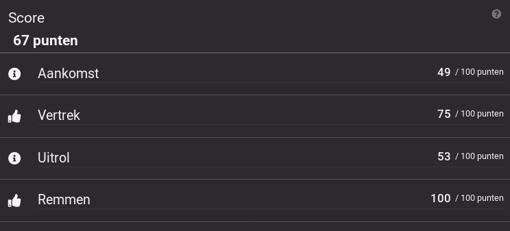

Ride Profiler (Dutch)
Voor de Nationale Spoorwegen (NS) is er namens Info Support een applicatie ontwikkeld waarmee machinisten hun ritten kunnen inzien. Zij maken gebruik van een Samsung Galaxy Tab S2. Deze draait een al eerder ontwikkeld programma genaamd TimTim. Dit programma logt GPS-data welke opgeslagen wordt.
Deze app is gebouwd met Angular, Ionic en Cordova als frontend in samenwerking met een dotnet core backend. Hierdoor draait de app dus cross-platform op iOS en Android. Er is een bestaande API van Info Support waar logging data vandaan komt, in dit project word er gebruik gemaakt van CSV-bestanden maar het kan makkelijk worden omgezet naar de API. De opdracht bestaat voor het grootste gedeelte uit het inzien van je rijstijl en deze kunnen analyseren, door deze te vergelijken met anderen en de ideale rit. Hierbij zit ook een onderdeel gamification om de gebruikers interactie te verhogen.
Dit project was in opdracht van de Nederlandse Spoorwegen en de broncode hiervan mag niet worden vrijgegeven.
Wel zijn hier het functioneel ontwerp en het technisch ontwerp als pdf beschikbaar.